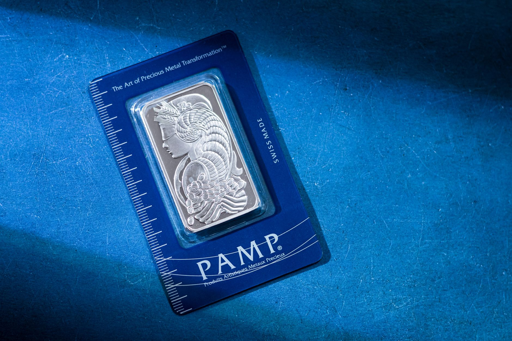

Are you looking for a reliable and affordable way to add silver to your investment portfolio? Many investors, particularly those starting out or looking to diversify, turn to silver bars as a tangible and relatively accessible asset. And for quality silver bars, Johnson Matthee consistently comes up as a top recommendation. At Fused Distribution, we stock a wide selection of Johnson Matthee bars, and we’re here to guide you through choosing the right one for your needs. This guide will break down everything you need to know about these popular bars, helping you understand their value, purity, and how they fit into your overall investment strategy.

Johnson Matthee bars are known for their exceptional purity and consistent weight, making them a trusted choice for serious investors. They’re typically .999 fine silver, guaranteeing a high level of authenticity. We believe in providing transparency, and we’ve compiled this guide to help you navigate the different sizes and options available. In the following sections, we’ll look at the specifics of Johnson Matthee bar sizes, discuss factors to consider when purchasing, and offer some insights into storage and security. Let's get started on your journey to informed silver investing!
Johnson Matthee Silver Bars: A Comprehensive Buying Guide
At Fused Distribution, we understand that navigating the world of silver investing can be overwhelming, especially when considering different bar options. Johnson Matthee silver bars have become increasingly popular amongst US retail investors, and for good reason. We stock a wide selection of these bars, offering a reliable and trustworthy way to acquire physical silver. Johnson Matthee bars are known for their high purity (99.9% fine silver), consistent sizing, and secure packaging, making them ideal for both short-term and long-term storage.

These bars are typically available in weights ranging from 1 troy ounce to 10 troy ounces, providing flexibility for your investment budget. We recommend purchasing from reputable dealers like Fused Distribution to ensure authenticity and competitive pricing. Currently, the average price per troy ounce for a Johnson Matthee bar sits around $30 - $35, though this fluctuates with market conditions. We encourage you to research and compare prices before making a purchase.
Understanding Johnson Matthee Silver Bars - What You Need to Know
At Fused Distribution, we understand the growing interest in physical silver as a safe and reliable investment. Johnson Matthee silver bars are a popular choice for US retail buyers, and for good reason. These bars offer a tangible way to own silver, providing peace of mind that’s often lacking with digital investments. We stock a wide variety of Johnson Matthee bars in different sizes, catering to various budgets and storage needs.
Johnson Matthee bars are known for their high purity and consistent quality, typically 999.9% fine silver. This means you’re getting a significant amount of actual silver for your money, minimizing the risk of adulteration. They’re also produced by a reputable refiner, ensuring a trustworthy and secure investment. Also, they’re readily buyable and sellable, offering flexibility within your portfolio.
Why Choose Johnson Matthee Silver Bars for Your Investment?
At Fused Distribution, we understand that choosing the right silver bars is a crucial step in building a solid investment portfolio. That’s why we stock Johnson Matthee silver bars - they consistently rank among our top recommendations for US retail buyers. Johnson Matthee bars are renowned for their exceptional purity, typically exceeding 99.9% fine silver, ensuring you’re getting the highest quality metal possible. This high purity translates to greater value retention and peace of mind.
We believe in transparency and reliability, and Johnson Matthee’s commitment to quality aligns perfectly with our values. Their bars are produced in South Africa, a historically significant silver mining region, and undergo rigorous testing to guarantee authenticity and accuracy. Also, they offer a variety of bar sizes to suit different budgets and investment goals, making them accessible to both beginner and intermediate investors.
Johnson Matthee Silver Bar Sizes and Purity Levels
Johnson Matthee Silver Bar Sizes and Purity Levels
We stock a comprehensive selection of Johnson Matthee silver bars, catering to investors of all levels. These bars are renowned for their quality and consistent purity, making them a popular choice for long-term silver storage and investment. Currently, we offer bars in several standard sizes: 1 troy ounce, 5 troy ounces, 10 troy ounces, 1 kilogram, and 10 kilogram bars. The most common purity for Johnson Matthee bars is .999 fine silver, meaning they contain 99.9% pure silver, a level that provides excellent stability and minimizes tarnishing. For more on this, see Mexican Silver Libertad Coins Guide.
Understanding the different sizes is crucial for determining your investment budget and storage needs. Smaller bars like the 1 troy ounce are ideal for starting out, while larger bars offer better pricing per ounce. We recommend carefully considering your investment goals and storage capabilities when selecting the appropriate size and weight. Remember to always verify the bar's authenticity and purity before purchasing, and we are here to assist you with any questions you may have. For more on this, see Silver Panda Coins From China: A Complete Guide.
Where to Buy Johnson Matthee Silver Bars - Fused Distribution’s Selection
At Fused Distribution, we understand the growing interest in tangible silver investments, and Johnson Matthee bars are a fantastic option for both beginners and experienced collectors. We’ve carefully curated a selection of these highly sought-after bars, offering a secure and reliable way to add silver to your portfolio. We stock a variety of weights and denominations, ensuring you can purchase exactly what you need, from smaller, more affordable options to larger, bulk purchases.
We prioritize quality and authenticity, partnering with reputable distributors to guarantee each bar meets the highest standards. Johnson Matthee bars are known for their distinctive branding and consistent quality, making them a trusted choice within the silver market. Currently, we offer bars in 1 kilo, 100 ounce, and 1 ounce sizes, with prices starting at $28,000 for the 1 kilo bar. We recommend reviewing our current inventory and specifications on our website to find the perfect fit for your investment goals.
Storage and Security for Your Johnson Matthee Silver Bars
At Fused Distribution, we understand that securing your investment in Johnson Matthee silver bars is essential. Protecting your physical silver requires a thoughtful approach, and we recommend starting with a secure, fireproof, and humidity-controlled container. A small safe, a bank safe deposit box, or a dedicated storage unit are all viable options, depending on the quantity you own and your risk tolerance. We typically advise against storing silver in a standard home safe due to potential fire and theft risks.
Considering the current market volatility and rising crime rates, investing in a high-quality safe specifically designed for precious metals is a wise decision. These safes often offer features like biometric access, digital combination locks, and reinforced construction, providing an extra layer of protection. Remember, a properly secured storage solution significantly reduces the risk of loss or theft, allowing you to enjoy the peace of mind that comes with a secure investment.
Pricing and Market Trends Affecting Johnson Matthee Silver Bar Value
Pricing and Market Trends Affecting Johnson Matthee Silver Bar Value
As a trusted supplier of silver bullion, we at Fused Distribution closely monitor the factors influencing the value of Johnson Matthee silver bars. These bars, known for their high purity and attractive branding, are consistently popular with investors, and their price fluctuates alongside broader market dynamics. Currently, the spot price of silver plays the most significant role, with any upward movement in the global market directly impacting the price per ounce. We’ve seen recent fluctuations driven by inflation concerns and geopolitical instability, leading to increased demand for safe-haven assets like silver.
Beyond the spot price, several secondary trends also affect Johnson Matthee bar value. Demand from retail investors, particularly those new to silver, can create localized price premiums. Also, the availability of these bars - we stock a consistent supply - and the perceived ease of buying them, contribute to their desirability. Keep an eye on economic indicators and news reports to anticipate potential shifts in the market.
Making Your First Purchase: A Step-by-Step Guide to Buying Johnson Matthee Silver
At Fused Distribution, we understand that venturing into the world of silver investing can feel a little daunting, especially when you’re just starting out. That’s why we’ve created this guide to help you confidently make your first purchase of Johnson Matthee silver bars. Johnson Matthee bars are a popular choice for investors due to their consistent purity, attractive designs, and relative affordability. We stock a wide selection of sizes and weights to suit various budgets and investment goals.
First, determine how much silver you’re looking to invest. Johnson Matthee bars typically come in weights ranging from 1 troy ounce to 10 troy ounces. Next, visit our website or contact us directly to browse our current inventory and prices. We recommend checking our website for real-time pricing and availability, as stock levels can fluctuate. Finally, securely complete your purchase through our website - we offer multiple payment options for your convenience.